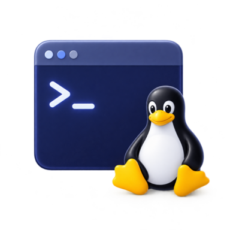

Continue learning
Linux Foundations
Build practical Linux knowledge one focused topic at a time.
0%complete

Your learning dashboard
Continue learning
Build practical Linux knowledge one focused topic at a time.

Today's revision
Keep your knowledge fresh with a focused 5–15 minute review.
Course + verified official docs
Search every lesson and curated official reference for Linux concepts, commands, interview answers and production troubleshooting.